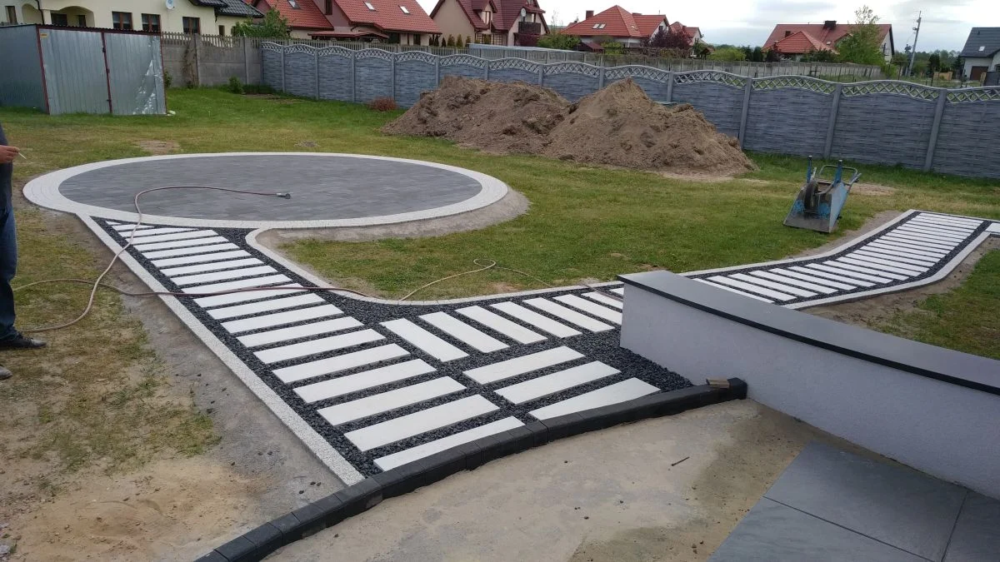
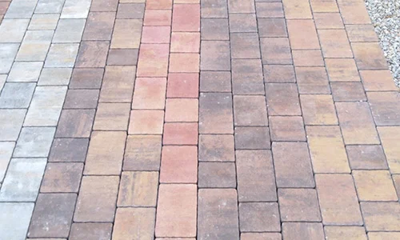
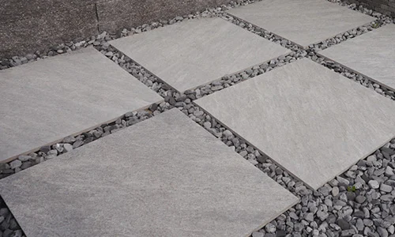
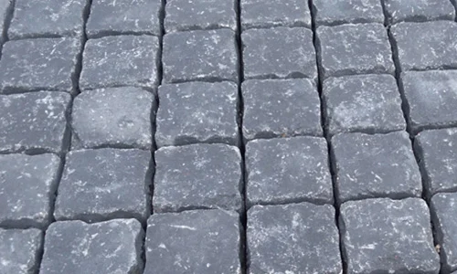
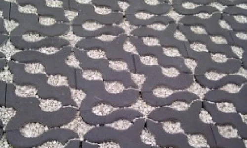
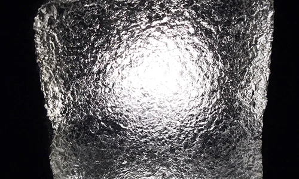

Zacznij od codziennych tras.
Przemyśl dojazd do garażu, dojście do wejścia, pojemników na odpady, drewutni i miejsca wypoczynku. Ustal wymiary, zanim wybierzesz format kostki czy płyty. Dobry układ pomaga korzystać z posesji naturalnie, bez niepotrzebnego nadkładania drogi.
Kolor elewacji, stolarka, ogrodzenie i zieleń tworzą kontekst dla nawierzchni. Ograniczona, powtarzalna paleta pozwala połączyć je w spokojną kompozycję. Projekt ułatwia wybór materiałów oraz zaplanowanie kolejności prac.

Znajdź własny kierunek.
Prosta geometria dobrze komponuje się z nowoczesną bryłą domu. Mniejsze formaty i subtelne różnice odcieni pozwalają budować bardziej swobodne układy. W obu przypadkach warto powtórzyć wybrany materiał lub kolor w kilku miejscach: przy wejściu, na tarasie czy wokół rabat.
Na stronie Markin znajdziesz galerię realizacji, a na naszym Facebooku kolejne materiały. Podczas wizyty możesz porozmawiać o kostkach, płytach betonowych i ceramicznych, obrzeżach, ogrodzeniach oraz małej architekturze.
Materiał dobierz do zadania.
Najpierw zastosowanie, potem wygląd. Inne wymagania ma ścieżka w ogrodzie, inne podjazd. Nośność zależy od konkretnego produktu, wymiarów elementów, podłoża, podbudowy i sposobu montażu. Grubość oraz dopuszczalne obciążenie zawsze sprawdź w dokumentacji wybranego producenta.
Nie każda płyta tarasowa nadaje się na podjazd lub do układania na wspornikach. Parametry sprawdzamy dla konkretnego modelu i zastosowania.
Kolor, format, faktura
Melanże kolorystyczne, powierzchnie płukane, szczotkowane, postarzane czy inspirowane kamieniem pozwalają dopasować charakter nawierzchni do domu. Wielkoformatowe płyty budują spokojne podziały, a drobniejsze elementy dają większą swobodę kompozycji.




Pomyśl o wodzie i świetle
Nawierzchnie z otwartymi przestrzeniami między elementami mogą wspierać przenikanie wody, jeśli cały układ warstw i podłoże są do tego przystosowane. Rozwiązanie dobierz razem z planem odwodnienia działki.
Światło przy ścieżkach, stopniach lub w samej nawierzchni podkreśla układ posesji. Barwa, sposób sterowania i parametry zależą od modelu oprawy. Przebieg instalacji najlepiej przewidzieć już przy projektowaniu.

Od pomysłu do zamówienia.
Przygotuj wymiary powierzchni, zdjęcia i informację, jak będzie używana. Jeśli masz projekt lub wybrane produkty, prześlij je albo zabierz na spotkanie. Ustalimy zakres materiałów i przygotujemy indywidualną wycenę.
Przed zamówieniem potwierdzamy konkretny wariant produktu, ilość, aktualną cenę i dostępność. Sposób odbioru, możliwość transportu, jego koszt i termin wymagają ustalenia dla danego zamówienia.
Zapytaj o wycenęDetale, o których warto pamiętać.
Przed rozpoczęciem układania sprawdź dostawę, oznaczenia na paletach i stan materiału. Zachowaj etykiety oraz dokumenty dotyczące produktów. Wymagania i właściwości materiału sprawdzaj w jego aktualnej dokumentacji.
- Rozmieszczaj kolory i mieszaj elementy z palet zgodnie z zaleceniami producenta, aby uzyskać naturalny rozkład odcieni.
- Pozostaw właściwe fugi. Zbyt ciasne ułożenie może sprzyjać uszkodzeniom krawędzi.
- Dopasuj nośność podłoża, podbudowę i sposób zagęszczania do wybranego systemu.
- Na betonie mogą pojawić się wykwity wapienne. Ich ocenę i sposób postępowania sprawdzaj w instrukcji oraz warunkach producenta.
Materiały betonowe mają różne deklarowane zastosowania. Dobór i wykonanie omów z projektantem lub wykonawcą dla warunków swojej inwestycji.
Warunki sprzedaży.
Zapoznaj się z dokumentem udostępnionym przez Markin. Szczegóły konkretnego zamówienia, w tym ceny, terminy i transport, potwierdź podczas kontaktu.
Pobierz warunki sprzedaży (PDF)Poradnik opracowano na podstawie treści Markin i informacji producentów: Libet, Bozza oraz LedBruk.